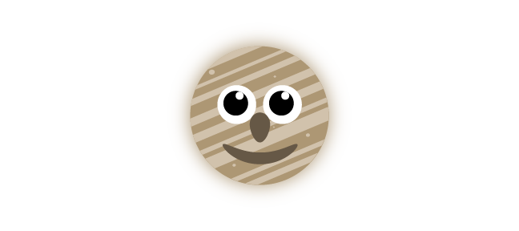
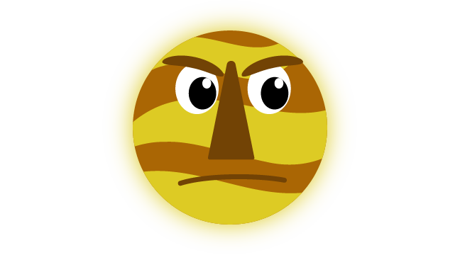
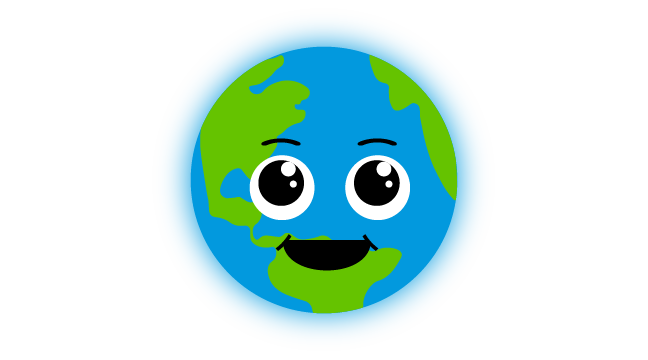
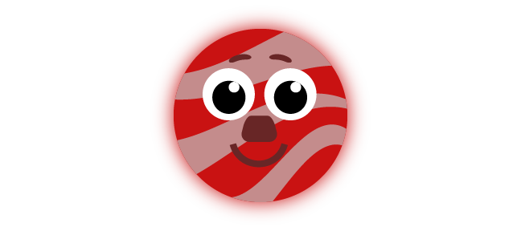
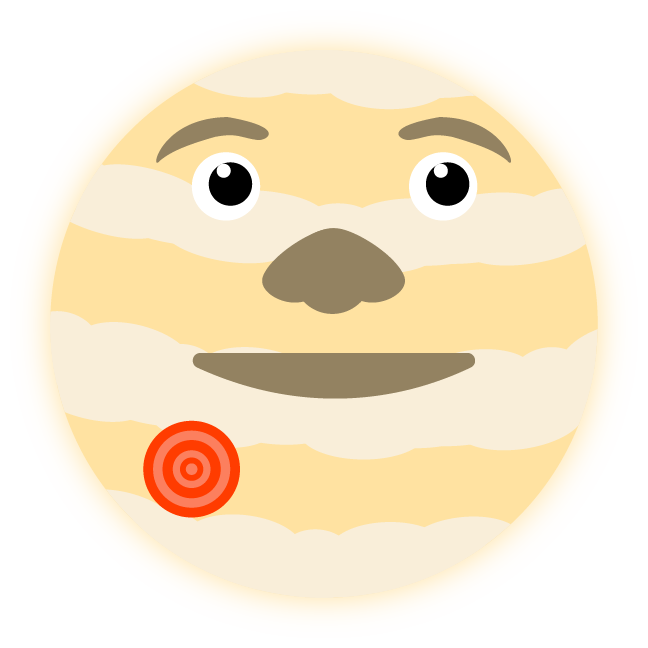
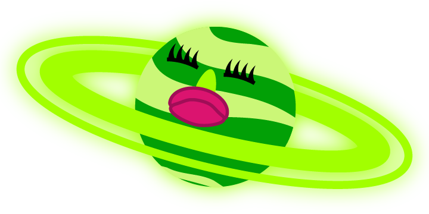
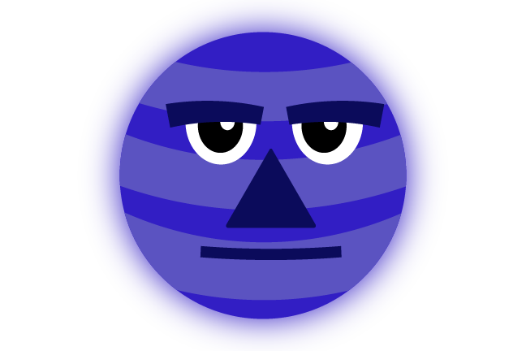

THE SUN

The Sun is the head honcho of the solar system. Its gravity is the glue that holds everything together, and allows all of the planets to continuously rotate around it. According to NASA, the sun blazes at a harsh heat of 10,000 degrees Fahrenheit! It's a shame that we can’t get close enough to it without burning into flames. It could use a hug for all its hard work…
MERCURY
The smallest planet in the solar system and the one that orbits closest to the sun. Mercury has a lot in common with the moon that orbits around Earth with its rocky surface and gray color scheme. Unlike the rest of the planets, Mercury doesn’t have any moons. You might think it gets lonely, but Mercury doesn’t seem to mind. In fact, it actually looks pretty happy orbiting there all by itself.
VENUS
Venus is the third largest planet in the solar system. Though it’s a bit farther from the sun than Mercury, it is actually the hotter planet. Its volcanic surfaces and thick atmosphere combine to make the planet feel like a really hot greenhouse. Scientists like to call Venus “Earth’s Twin” due to their similar sizes and close proximity to one another. Looks like Venus got the short end of the stick there. How come Earth gets to be the one with conditions that make life possible?
EARTH
Our very own planet Earth. It is the only planet in our solar system where plants and animals can survive. This is due to a wide variety of things, but mainly because of the fact that most of the planet is covered with liquid water. Though Earth gets all the credit for its sustainable habitat, we can’t forget about the moon! The moon is like Earth’s little sidekick. Its gravitational pull is what causes the waves in Earth’s bodies of water, while also stabilizing the Earth rotation and keeping it from wobbling around all over the place. Talk about a dynamic duo!
MARS
Good ol’ Mars. The planet that is famous for one thing: its red color scheme. Despite many rumors and claims stating otherwise, there is no sign of life to be found on Mars (unless you count all of NASA’s robots wandering about!). It has a cold surface, and its air features mostly carbon dioxide. Other than Earth, scientists speculate that Mars is the planet where humans could survive the longest, provided they bring their own oxygen, food, and water. Mars isn’t sure how to feel about these visitors, but it tries its best to be a good host.
JUPITER
Jupiter is far and away the largest planet in the solar system. It is so big, that you could fit all of the other planets inside of it and STILL have plenty of room to spare. Jupiter is made almost entirely out of gasses, and doesn’t even have a solid surface. Other than its humongous size, Jupiter is also famous for its giant red spot, which is basically a storm that has been raging for over 100 years. Some might say it looks like a giant zit, but Jupiter prefers the term “birthmark”.
SATURN
Perhaps the most recognizable planet in our entire solar system, Saturn is notorious for its beautiful rings. It is also the second largest planet, being almost nine times as large as Earth. Like Jupiter, it is mostly made of gas and is no way suitable for human life. Saturn also has the most moons, with a whopping 146(!) orbiting around its axis. Saturn is well aware of its prominent rings, and sure loves to show them off whenever it gets the chance.
URANUS

Uranus is one of two “ice giants” featured in our solar system. It’s made mostly out of icy fluids and large amounts of methane, which explains its bright blue color. Uranus also has some rings of its own. However, they are much thinner and don’t stand out quite as much compared to Saturns. Since it is so far away from the sun, Uranus is quite cold. Thankfully, it has Neptune nearby to keep it company.
NEPTUNE
The second of the “ice giants” duo, and the planet that orbits the farthest away from the sun. Like Uranus, Neptune features mostly methane in its atmosphere, which is what gives the planet its rich blue color. It also has 13 small rings that surround it, but you wouldn’t know it from all the attention Saturn gets. Neptune likes to stray far away from the sun, sometimes going as far enough to surpass Pluto’s orbit. Somebody’s a lone wolf!